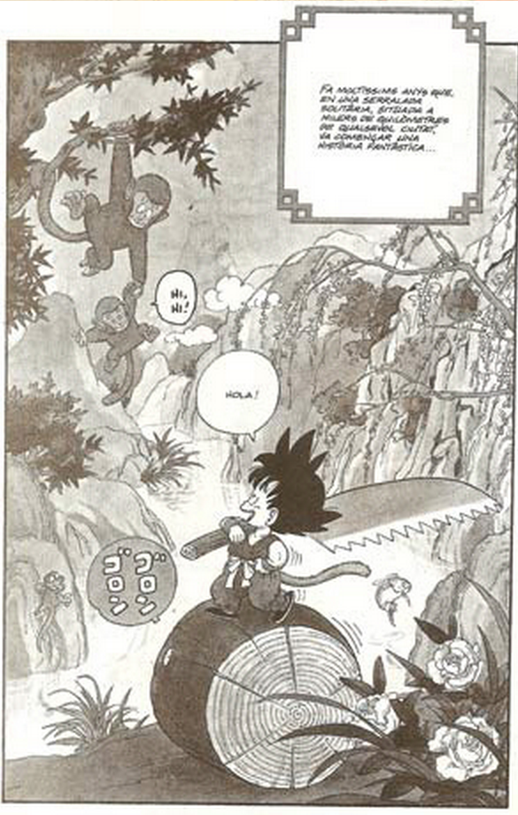
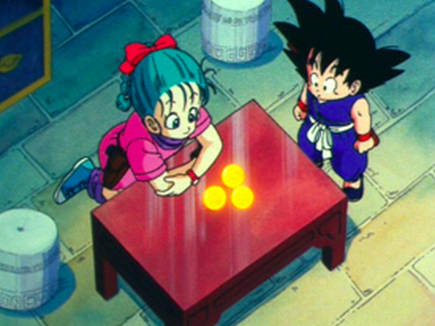
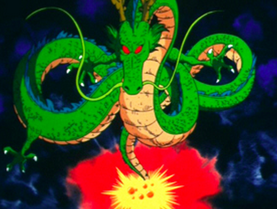
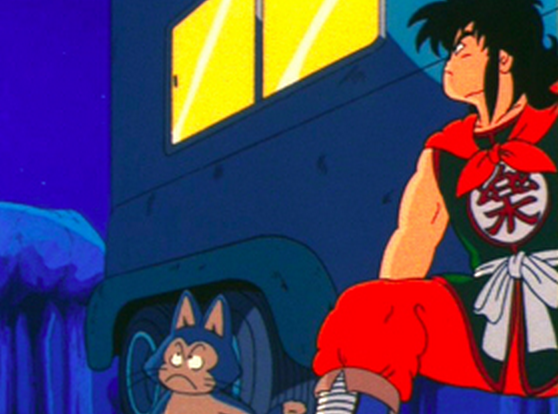
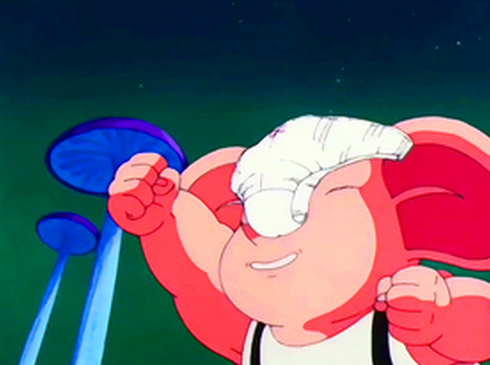

Tot comença quan la Bulma, una noia de 16 anys, decideix anar a buscar les boles de drac per a demnar-li al drac Xeron que li busqui un nòvio. En el seu camí es troba amb en Goku: un nen innocent amb cua i una extraordinària força que casualment pooseeix una bola de drac.
La Bulma li explica la llegenda de les boles de drac, segons la qual la persona que aconsegueixi reunir les set boles de drac podrà invocar al drac màgic Xeron i demanar-li un desig, així que Goku es converteix en el seu company d'aventures en la cerca de les boles de drac, les quals cerquen amb l'ajuda d'un modern radar de butxaca. En el seu camí es troben amb una tortuga (Umigame) la qual més edavant els presenta a un famós mestre d'arts marcials: el Follet Tortuga. Aquest fort i pervertit ancià té justament una altra bola de drac.
|  |  |
Però aviat descobreixen que no són els únics interessats en reunir les boles de drac. Es topen amb en Pilaf, un baixet malvat, de color blau que intenta reunir les boles de drac per dominar el món. En Pilaf els segresta e intenta robar les boles de drac. És en aquest moment de captiveri quan descobreixen la sorprenent característica d'en Goku: al mirar fixament la lluna plena, es transforma en un goril·la amb molta força, tot i que perd en aquest moment tota intel·ligencia. D'aquesta forma aconsegueixen escapar d'en Pilaf. Afortunadament també fan amics en les seves aventures. Com és el cas d'en Iamxa, un bandit que s'enamora de la Bulam però al que li entra pànic davant de les noies. Al assabentar-se de la llegenda de les boles de drac ell també s'uneix a ells amb l'esperança de demanar-li al drac que li tregui la por a les noies.
|  |  |
També se'ls uneix en Ulong, un porquet pervertit amb els poders de transformar-se en qualsevol persona o forma. Finalment serà l'Ulong qui vegi concedit el desig del drac: aquest li concedeix unes calcetes.